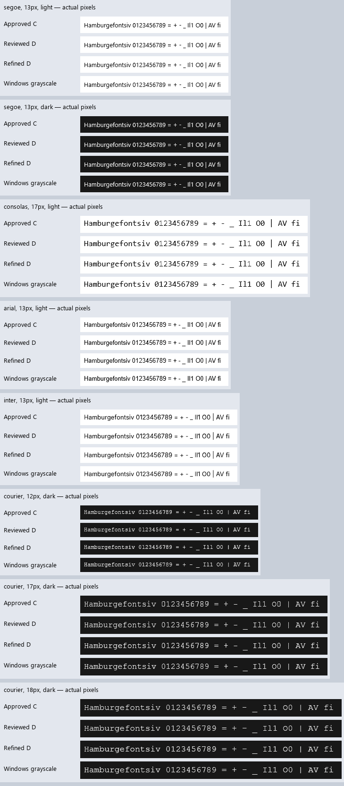

20 October 2026 · Windows grayscale reference · pure-D production rendering
C stays the shared default, as requested. The separate refinement improves all 144 monochrome comparisons against C, lowering average native pixel error 18.9%. It still has three small Courier New regressions against D. No default promotion is proposed. Exact native parity remains unfinished.
Compare live Pad++: C / refined D at 96 DPI · Implementation and limits · Preserved D review
| Corpus | Against C | Against D | Mean error, C → refined |
|---|---|---|---|
| 144 monochrome cases, nine fonts | 144 improve; 0 regress | 141 improve; 3 regress | 12.862 → 10.427 |
| 288 opaque RGB cases, four fonts | 276 improve; 12 equal; 0 regress | 272 improve; 12 equal; 4 regress | 8.860 → 7.361 |
Errors are 8-bit mean absolute differences over the union of ink pixels; they are diagnostic, not readability scores. The corpora overlap. RGB ties are white-on-white controls. Identical fonts, glyph IDs and physical origins isolate rasterization from shaping. The native monitor reports gamma 1.8 and grayscale contrast 1.0; other monitor settings are not claimed to match.
Refined D adds foreground-dependent gamma correction and metadata-based legacy thin-family handling to D's masks. The bounded cache reuses raw outlines across colors and opacity. An experimental Vulkan shader rounds opacity to A8 before blending, matching software exactly in both changing live probe frames at 96 DPI. C and D retain their existing correction and shader bytes.
Opt in before startup with AURORA_TEXT_EXPERIMENT=native-refined. Leave it unset for C.
The reviewed D remains available as native-next. No native rasterizer is used in application code.
The model adapts Microsoft Terminal's MIT-licensed grayscale model.
Four rows per sample: C, D, refined D, Windows grayscale. Accounting for the native thin-family boost still leaves a large Courier residual. This suggests further outline/scan-conversion work; it does not identify a specific faulty instruction or dropout rule.

| Font | px | Foreground RGB | Background RGB | Error increase |
|---|---|---|---|---|
| courier | 12 | [240, 240, 240] | [24, 24, 24] | +0.0581 |
| courier | 12 | [240, 240, 240] | [170, 200, 240] | +0.0249 |
| courier | 17 | [240, 240, 240] | [24, 24, 24] | +0.0282 |
| courier | 17 | [240, 240, 240] | [170, 200, 240] | +0.0298 |
All four are still better than C. Three monochrome regressions are Courier New dark at 12, 17 and 18px. Neither native ClearType RGB output nor native shaping parity is implemented by this refinement.
| Application | Theme | 100% | 150% |
|---|---|---|---|
| notepad | light | 96 DPI | 144 DPI |
| notepad | dark | 96 DPI | 144 DPI |
| host | light | 96 DPI | 144 DPI |
| host | dark | 96 DPI | 144 DPI |
| padpp | light | 96 DPI | 144 DPI |
All ten C app captures and all 144 C/D font images are unchanged. The desktop is now at 100%, compared with 125% during D's review. The preserved binary run in C mode at today's scale matches the new C live Pad++ capture exactly. No image was resized to compare scales.
Framework tests, 7,200 Windows glyph/size cases plus reverse replay per profile, font/cache/growth/metadata tests, 96/120/144/192 DPI tests, isolated releases, full host interactions and live Pad++ workflows pass for C and the refinement. The approved 0.039 ink guard is unchanged. The older Notepad's preexisting drag/restore smoke failure remains open.
Framework/build log · Full host/Pad++ log · App and live GPU captures · Compatibility checks · Source/protected-review audit · Vendor debt audit
| Font | px | Theme | C | D | Refined D | Delta vs D |
|---|---|---|---|---|---|---|
| segoe | 11 | light | 14.463 | 13.324 | 11.038 | -2.287 |
| segoe | 11 | dark | 11.262 | 10.049 | 9.259 | -0.790 |
| segoe | 12 | light | 12.155 | 11.580 | 9.134 | -2.446 |
| segoe | 12 | dark | 8.817 | 8.472 | 7.610 | -0.862 |
| segoe | 13 | light | 10.209 | 9.874 | 7.161 | -2.712 |
| segoe | 13 | dark | 6.911 | 6.504 | 5.704 | -0.800 |
| segoe | 17 | light | 10.161 | 9.660 | 6.787 | -2.873 |
| segoe | 17 | dark | 7.421 | 7.023 | 6.260 | -0.763 |
| segoe | 18 | light | 12.356 | 11.701 | 9.250 | -2.451 |
| segoe | 18 | dark | 9.117 | 8.519 | 7.883 | -0.636 |
| segoe | 20 | light | 10.228 | 9.526 | 7.277 | -2.249 |
| segoe | 20 | dark | 7.495 | 6.597 | 5.919 | -0.678 |
| segoe | 26 | light | 7.718 | 7.571 | 5.818 | -1.753 |
| segoe | 26 | dark | 5.100 | 5.022 | 4.488 | -0.533 |
| segoe | 34 | light | 6.031 | 5.868 | 4.112 | -1.756 |
| segoe | 34 | dark | 4.098 | 3.984 | 3.518 | -0.466 |
| consolas | 11 | light | 7.241 | 5.917 | 1.953 | -3.964 |
| consolas | 11 | dark | 4.232 | 2.742 | 1.823 | -0.918 |
| consolas | 12 | light | 7.323 | 6.580 | 3.555 | -3.025 |
| consolas | 12 | dark | 4.597 | 3.873 | 3.018 | -0.855 |
| consolas | 13 | light | 6.438 | 6.177 | 2.597 | -3.580 |
| consolas | 13 | dark | 3.462 | 3.210 | 2.253 | -0.957 |
| consolas | 17 | light | 17.372 | 16.426 | 14.357 | -2.069 |
| consolas | 17 | dark | 13.996 | 13.003 | 12.492 | -0.510 |
| consolas | 18 | light | 8.983 | 8.588 | 5.891 | -2.697 |
| consolas | 18 | dark | 6.003 | 5.745 | 5.227 | -0.518 |
| consolas | 20 | light | 4.565 | 4.310 | 2.234 | -2.075 |
| consolas | 20 | dark | 2.567 | 2.425 | 1.876 | -0.549 |
| consolas | 26 | light | 3.985 | 3.883 | 1.742 | -2.140 |
| consolas | 26 | dark | 2.130 | 2.111 | 1.543 | -0.568 |
| consolas | 34 | light | 5.120 | 4.503 | 2.591 | -1.912 |
| consolas | 34 | dark | 3.151 | 2.603 | 2.118 | -0.485 |
| arial | 11 | light | 23.941 | 22.504 | 22.437 | -0.067 |
| arial | 11 | dark | 20.661 | 19.239 | 18.787 | -0.452 |
| arial | 12 | light | 23.330 | 20.767 | 20.339 | -0.427 |
| arial | 12 | dark | 19.751 | 17.294 | 16.575 | -0.720 |
| arial | 13 | light | 27.121 | 24.671 | 24.141 | -0.530 |
| arial | 13 | dark | 22.796 | 20.683 | 20.233 | -0.450 |
| arial | 17 | light | 16.259 | 14.019 | 12.073 | -1.946 |
| arial | 17 | dark | 13.213 | 10.655 | 10.063 | -0.592 |
| arial | 18 | light | 7.279 | 7.202 | 4.303 | -2.898 |
| arial | 18 | dark | 4.381 | 4.381 | 3.517 | -0.865 |
| arial | 20 | light | 7.906 | 7.170 | 4.728 | -2.442 |
| arial | 20 | dark | 5.035 | 4.296 | 3.686 | -0.610 |
| arial | 26 | light | 6.193 | 5.726 | 4.284 | -1.442 |
| arial | 26 | dark | 4.330 | 4.090 | 3.649 | -0.442 |
| arial | 34 | light | 5.167 | 5.025 | 3.565 | -1.461 |
| arial | 34 | dark | 3.368 | 3.301 | 2.831 | -0.469 |
| calibri | 11 | light | 6.745 | 6.480 | 2.906 | -3.574 |
| calibri | 11 | dark | 3.362 | 3.303 | 2.333 | -0.970 |
| calibri | 12 | light | 7.562 | 7.236 | 3.757 | -3.480 |
| calibri | 12 | dark | 4.476 | 4.234 | 3.324 | -0.910 |
| calibri | 13 | light | 7.669 | 6.930 | 3.555 | -3.374 |
| calibri | 13 | dark | 4.661 | 4.082 | 3.093 | -0.989 |
| calibri | 17 | light | 7.039 | 6.388 | 3.355 | -3.033 |
| calibri | 17 | dark | 4.419 | 3.609 | 2.791 | -0.818 |
| calibri | 18 | light | 21.015 | 20.620 | 18.202 | -2.418 |
| calibri | 18 | dark | 16.911 | 16.554 | 15.850 | -0.704 |
| calibri | 20 | light | 8.966 | 8.210 | 5.478 | -2.732 |
| calibri | 20 | dark | 5.924 | 5.305 | 4.722 | -0.582 |
| calibri | 26 | light | 7.070 | 6.536 | 3.834 | -2.702 |
| calibri | 26 | dark | 4.795 | 4.152 | 3.364 | -0.787 |
| calibri | 34 | light | 5.664 | 5.601 | 3.691 | -1.910 |
| calibri | 34 | dark | 3.787 | 3.785 | 3.251 | -0.534 |
| tahoma | 11 | light | 26.506 | 24.293 | 23.946 | -0.347 |
| tahoma | 11 | dark | 21.231 | 19.524 | 19.116 | -0.408 |
| tahoma | 12 | light | 23.012 | 20.138 | 18.982 | -1.155 |
| tahoma | 12 | dark | 18.987 | 16.242 | 15.843 | -0.399 |
| tahoma | 13 | light | 23.205 | 20.838 | 19.394 | -1.444 |
| tahoma | 13 | dark | 19.155 | 16.838 | 16.203 | -0.636 |
| tahoma | 17 | light | 11.953 | 10.517 | 8.049 | -2.467 |
| tahoma | 17 | dark | 9.151 | 7.531 | 6.721 | -0.809 |
| tahoma | 18 | light | 6.029 | 5.806 | 2.988 | -2.818 |
| tahoma | 18 | dark | 3.213 | 3.112 | 2.378 | -0.734 |
| tahoma | 20 | light | 6.834 | 6.734 | 4.222 | -2.511 |
| tahoma | 20 | dark | 4.136 | 4.121 | 3.379 | -0.742 |
| tahoma | 26 | light | 5.196 | 4.684 | 3.084 | -1.600 |
| tahoma | 26 | dark | 3.322 | 2.944 | 2.458 | -0.486 |
| tahoma | 34 | light | 4.806 | 4.187 | 2.419 | -1.768 |
| tahoma | 34 | dark | 3.120 | 2.442 | 1.917 | -0.525 |
| verdana | 11 | light | 16.500 | 14.245 | 13.799 | -0.446 |
| verdana | 11 | dark | 14.166 | 11.954 | 11.437 | -0.516 |
| verdana | 12 | light | 20.813 | 18.309 | 17.847 | -0.462 |
| verdana | 12 | dark | 17.701 | 15.493 | 14.662 | -0.831 |
| verdana | 13 | light | 15.891 | 15.052 | 14.039 | -1.013 |
| verdana | 13 | dark | 12.914 | 12.141 | 11.608 | -0.533 |
| verdana | 17 | light | 11.276 | 9.639 | 7.054 | -2.585 |
| verdana | 17 | dark | 8.547 | 6.589 | 6.034 | -0.554 |
| verdana | 18 | light | 9.525 | 7.530 | 5.630 | -1.900 |
| verdana | 18 | dark | 7.074 | 5.017 | 4.559 | -0.458 |
| verdana | 20 | light | 11.393 | 8.969 | 7.401 | -1.569 |
| verdana | 20 | dark | 9.193 | 6.578 | 6.214 | -0.365 |
| verdana | 26 | light | 8.633 | 8.271 | 6.767 | -1.504 |
| verdana | 26 | dark | 6.432 | 6.030 | 5.654 | -0.376 |
| verdana | 34 | light | 5.323 | 4.834 | 3.781 | -1.053 |
| verdana | 34 | dark | 3.947 | 3.526 | 3.179 | -0.347 |
| courier | 11 | light | 34.171 | 33.036 | 32.648 | -0.388 |
| courier | 11 | dark | 31.157 | 29.593 | 28.563 | -1.030 |
| courier | 12 | light | 36.736 | 35.466 | 35.374 | -0.091 |
| courier | 12 | dark | 34.093 | 32.012 | 32.071 | +0.058 |
| courier | 13 | light | 31.221 | 30.133 | 30.030 | -0.103 |
| courier | 13 | dark | 28.668 | 27.146 | 27.054 | -0.092 |
| courier | 17 | light | 36.449 | 34.759 | 34.649 | -0.110 |
| courier | 17 | dark | 32.638 | 30.723 | 30.751 | +0.028 |
| courier | 18 | light | 30.885 | 30.386 | 30.211 | -0.175 |
| courier | 18 | dark | 27.304 | 26.413 | 26.664 | +0.251 |
| courier | 20 | light | 31.206 | 30.761 | 30.434 | -0.327 |
| courier | 20 | dark | 26.652 | 26.258 | 25.749 | -0.509 |
| courier | 26 | light | 29.186 | 28.088 | 27.716 | -0.372 |
| courier | 26 | dark | 24.521 | 23.587 | 23.110 | -0.477 |
| courier | 34 | light | 33.492 | 31.599 | 31.170 | -0.430 |
| courier | 34 | dark | 29.014 | 27.060 | 26.212 | -0.848 |
| times | 11 | light | 25.579 | 16.603 | 13.943 | -2.660 |
| times | 11 | dark | 20.325 | 12.811 | 11.919 | -0.892 |
| times | 12 | light | 23.988 | 14.929 | 11.979 | -2.950 |
| times | 12 | dark | 19.051 | 11.162 | 10.391 | -0.772 |
| times | 13 | light | 23.916 | 15.426 | 12.595 | -2.831 |
| times | 13 | dark | 19.717 | 12.061 | 11.289 | -0.772 |
| times | 17 | light | 16.890 | 15.758 | 13.695 | -2.063 |
| times | 17 | dark | 13.721 | 12.460 | 11.728 | -0.732 |
| times | 18 | light | 14.419 | 10.980 | 9.146 | -1.834 |
| times | 18 | dark | 10.643 | 8.374 | 7.780 | -0.593 |
| times | 20 | light | 7.177 | 6.700 | 4.293 | -2.407 |
| times | 20 | dark | 4.492 | 4.190 | 3.588 | -0.602 |
| times | 26 | light | 6.865 | 6.696 | 4.536 | -2.161 |
| times | 26 | dark | 4.240 | 4.207 | 3.732 | -0.476 |
| times | 34 | light | 5.754 | 5.674 | 3.971 | -1.702 |
| times | 34 | dark | 3.716 | 3.716 | 3.315 | -0.402 |
| inter | 11 | light | 6.698 | 6.578 | 2.729 | -3.849 |
| inter | 11 | dark | 3.581 | 3.581 | 2.271 | -1.309 |
| inter | 12 | light | 28.308 | 28.209 | 25.829 | -2.379 |
| inter | 12 | dark | 22.808 | 22.808 | 22.290 | -0.518 |
| inter | 13 | light | 17.624 | 17.534 | 15.189 | -2.345 |
| inter | 13 | dark | 13.341 | 13.341 | 12.548 | -0.793 |
| inter | 17 | light | 21.723 | 21.652 | 19.930 | -1.721 |
| inter | 17 | dark | 17.614 | 17.614 | 17.223 | -0.392 |
| inter | 18 | light | 10.986 | 10.893 | 8.775 | -2.118 |
| inter | 18 | dark | 7.939 | 7.939 | 7.303 | -0.636 |
| inter | 20 | light | 13.362 | 13.287 | 11.227 | -2.059 |
| inter | 20 | dark | 9.850 | 9.850 | 9.276 | -0.574 |
| inter | 26 | light | 5.075 | 5.010 | 2.912 | -2.098 |
| inter | 26 | dark | 3.358 | 3.358 | 2.694 | -0.664 |
| inter | 34 | light | 4.483 | 4.426 | 2.765 | -1.661 |
| inter | 34 | dark | 2.800 | 2.800 | 2.266 | -0.534 |
Measurements, native settings and hashes · Full opaque RGB measurements